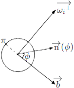
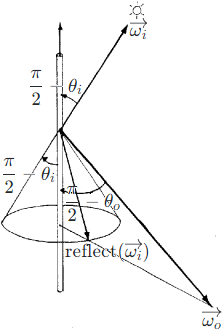

By [Kajiya 1998], at any given position of the cylinder, there are infinite number of normals which
point in all directions perpendicular to the tangent.
Let t be the tangent, ωi⊥ be the (normalized) projection of the incident direction ωi onto the plane perpendicular to the tangent, and b=ωi⊥×t be the bitangent.
Let ϕ be the azimuth, and n(ϕ)=ωi⊥sinϕ+bcosϕ be the normal points in one
direction perpendicular to the tangent.

By [Kajiya 1998], the (cosθi)+ is no longer calculated as max(0,n⋅ωi), but as the integral along the
circumference of the cylinder intead. This means that (cosθi)+=∫0πn(ϕ)⋅ωidϕ=∫0π(ωi⊥sinϕ+bcosϕ)⋅ωidϕ=ωi⊥⋅ωi∫0πsinϕdϕ=ωi⊥⋅ωi=sin(t,ωi)=1−(t⋅ωi)2. The (cosθi)+ is calculated by FakeNormal
in UE4 and _USE_LIGHT_FACING_NORMAL
in Unity3D.
Let reflect(ωi) be the reflected direction of the incident
direction, and ωo be the outgoing direction.

By [Kajiya 1998], the half-angle vector ωh should be independent of the azimuth ϕ. This means that the incident
direction ωi is rotated about the tangent t to make sure that the incident direction ωi, the reflected direction reflect(ωi), and the outgoing direction ωo are coplanar before the half-angle vector is calculated.